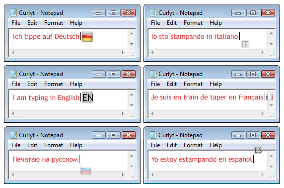
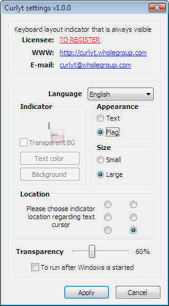

Curlyt indicates the active layout being currently used (the language you are typing at this particular moment); it is always in front of you, exactly at the place you are typing! You won’t feel yourself frustrated due to the text typed in with a wrong keyboard layout. You can set the indicator appearance to your taste, so it won’t distract attention while typing and at the same time will follow its purpose – to inform you about the chosen layout. Curlyt layout indicator is especially useful to those who simultaneously work with several applications (documents).
Curlyt is compatible with main Windows versions (2000/XP/2003/Vista/2008, including x64).

To change Curlyt settings you are to click on the software icon situated in right down corner of workplace (Windows tray). In a popup menu choose “Settings”.

Settings windows is divided in two parts.
The upper part displays reference information: license owner, software official site, developer’s e-mail.
The lower part of settings window allows you to change software language and indicator appearance:
Indicator - allows to preview indicator appearance with the chosen settings. It is also possible to set colors of indicator (if the textual indicator appearance is chosen).
Appearance - allows to set appearance of the active keyboard layout indicator. Indicator can be textual – first two letters of the language name or can look like a flag of the country where the chosen language is spoken.
Size - Curlyt software allows to choose from two indicator sizes 16x16 pixels (small) и 24x24 pixels (big).
Transparency - allows to set indicator transparency, to make it less noticeable and less distracting from the text being typed, this will not interfere effective usage of all the advantages of Curlyt software allowing to indicate active language (0% — absence of transparency).
Position - in here you are to set the active language indicator position regarding the text cursor.
To run after Windows is started - Curlyt software downloads automatically every time the Windows operation system is started (by default).